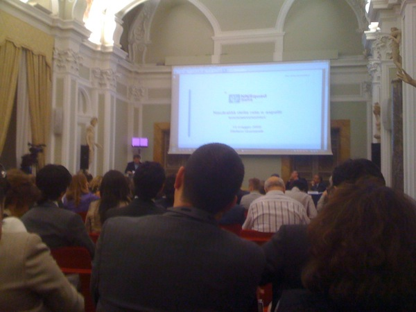
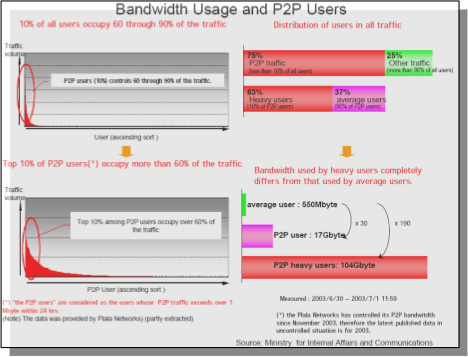

The conceptual foundations and the economics network neutrality [Part 2] - 14 May 2009, Rome
This is the second part of my recap of the nnsquad.it convention held in Rome on May 14, 2009, and hosted by the ICT consultants foundation Fondazione Ugo Bordoni.
In the first part I described the morning session, dedicated to the definition of Network neutrality, and how global economics can cope with it. The afternoon was dedicated to more technical talks, and I had the occasion to hear telcos spokesmen remarks over the current situation and possible future developments.

The first speech started at 2.15PM and was held by Prof. Vittorio Trecordi (slides available here). He introduced it by stating that net neutrality could possibly contrast with the economic development and security assessment, because of the wiretapping needed for the latter, tap that is strongly against the individual freedom to communicate.
Strangely (or maybe not) enough, no mention was made to current ways to bypass both wiretapping and localization of communicating peers: I’m referring to the tor project, the most known bastion that guarantees privacy and is currently used by journalists working in "hot" areas, among many others.
Another point about legislation is that it isn’t the same in all countries, althought the Internet is spread all over the world; moreover we should define on what networks we should assess neutrality, because not necessarily an IP network is connected to the Internet (think about ISP-owned walled gardens).
Also, again on the Quality of Service: Trecordi stated the Internet succeeded because of its "hourglass model" and “the capability to decouple communications services and network infrastructure”, but QoS requirements (e.g. for VoIP) stress the protocol stack pile, moreover where the network pipes are “overbooked”. Furthermore, even overprovisioning fails, because of the decentralized architecture of the Internet, and bottlenecks are mainly located in interconnection points between ISPs.
So, the Internet is a best-effort platform, where an ISP can’t control how its customers’ packets will be treated when crossing its borders, and reach a geographically far provider. In this area reside the business model of the content delivery networks, that we’re transparently using everyday to access heavily trafficked web sites, and that also caused some funny misunderstandings in the past, when akamai started proxying the microsoft with squid running on Linux, and netcraft shown in its statistics that microsoft servers are running on linux :).

Source: Akamai
Apart from that funny joke (from 2001), CDN shorten the routing path between users and static content of a service, using geographically distributed data centers running Varnish (or equivalent software) and a geolocation-enabled DNS server such as PowerDNS. This way, when some random client tries to resolve an hostname, the DNS answers with the nearest datacenter virtual IP address, and then serves content off the cache.
This are approaches that try to mitigate the best-effort nature of the Internet, but maybe there are better solutions. NGN aims to be one of those, by providing multiple network pipes dedicated to deliver different types of network traffic, with their specific QoS needs. Especially in peering connections between ISPs, which should provide SLAs to assess a global (albeit best-effort :) QoS between networks. Fully guaranteed QoS was and will be assured only into walled gardens.
Another approach to shorten routing paths and single-point network load is to use a distributed hash table, or DHT in short, that implements a decentralized distributed infrastructure upon which can be built efficient services like distributed file systems, peer-to-peer sharing, and in general content distribution systems. bittorrent is an example of DHT, as is the Kademlia used by the popular emule file-sharing software. Another example is RELOAD, currently (still) in draft status, used to implement peer-to-peer SIP, and so a decentralized VoIP infrastructure with no big name behind it. I’m no surprised that RELOAD and P2PSIP weren’t mentioned in the talk.
Of course neither NGNs neither P2P/CDN technologies will cover the entire internet in no time: the good ‘ol net will float upon these new technologies and on legacy ones (such as IPv4) in the next years, because changing network infrastructure imposes heavy costs on ISPs. One may ask whether also content providers should contribute to network infrastructure development, as they’re the ones that would benefit from wider BW and lower latency. Prof. Trecordi said yes, google uses 21 times more bandwidth it pays for. Hell. LaTeX isn’t enough to make content, mr Ph.D. This comment explains my point of view on this matter, and was also exposed later by a member of the audience.

Source: Trecordi’s slides
Whichever networking infrastructure we may adopt in the future, we cannot prescind from a plain fact: just a minority of the users will consume the majority of the bandwidth.. as happened with Napster in 2000, when because of Shawn Fanning software was allegedly consuming 80% of the aggregate external bandwidth of his college. Considering this scenario, the speaker argued that it is reasonable for ISPs to put caps on specific services (file sharing über alles) to limit the “all you can eat” model, because the few users making a massive use actually could impact the ones using fewer resources. I’ve got mixed opinions about this, because ISPs too often cross the line.. and reasonable caps can too easily become unacceptable ones.
Then the professor talked about P4P as a possible mitigation factor of network congestion. P4P means that ISPs collaborate with bittorrent clients implementors to develop custom versions to optimize P2P connections between customers. What is this optimization about? In short, to not favor the fastest clients, but the nearest ones, in terms of routing hops. This happens via a dedicated iTracker set up by the ISP (ouch!) that contains additional information about the physical location of clients, and can thus direct P2P connections to the nearest ones.
The dark side of P4P, as Ernesto’s Torrentfreak founder points out, is that it can open a big can of worms, because the P4P working group "includes some prominent members of the entertainment industry and well known anti-piracy lobbyists" (sorry but the highlighter didn’t work well on this page). I’m unable to say Ernesto is wrong, also because of statement like the one Sony pictures CEO said yesterday May 15 2009: "nothing good has come from the internet, period.". Heh. No comments.
Then, DPI (Deep Packet Inspection). Can ISPs use it? And for which purposes? Security? Well, it could work, as long as automated procedures filter SPAM and Virii out of residential networks, ok.. but AT&T has used Narus and split fibers to identify and collect VoIP calls data bits, DPI can also be used to deliver targeted advertising, and can be abused way too easily: In Italy we had the infamous Tiger Team espionage scandal, so we need precise rules to regulate these possibly evil technologies, and make sure ISPs respect them. We need a huge dose of Faith, I’d guess.
Photo by shrued
Round table with telcos spokesmen
This was the really interesting part of the event: seeing men that represent telcos speak to each other about Internet matters, and referring each other as the companies they represent. Quite funny, considering the quite complicated status quo here in Italy (governative concessions, last mile cables owned by a single company for historic reasons, and so on).
The involved parties (and condensed key points) were:
Paolo di Domenico – Vodafone – (Score: 3)- Heavy internet users should not be able to degrade user experience for other customers
- We won’t block traffic on an application basis
- We should be able to manage traffic load and put caps when we’re over capacity
- SLAs and TOSs trasparency is a must
Anton Giulio Lombardi – Tre – (Score: 3)- Devices are iMproving and becoming multi-connected (wifi, gsm, hsdpa), this implies convergence of services that today are separated (telephony and internet)
- Frequencies: on May 6th 2009 in Italy has been voted a law proposal that if will pass, mobile operators will be allowed to make a broader use of frequencies than now
- Content is being partitioned by the producers in order to get more revenue; multi-connected devices which kind of access do they provide? E.g. a PC with an HSDPA module which kind of access does provide? Broadband? UMTS? We need sane regulations in order to alleviate load on the mobile operators, or everyone will start using non-compatible platforms. (I really could not understand his point).
- On regulations again: people could use our mobile phones (70M in Italy) for payment, but legislation is not ready. Also, our company broadcasts RAI television via DVBH, but RAI does not broadcast itself. Quite odd.
Raffaele Mosca – Wind – (Score: 3)- Neutrality is the common basis upon which to start any further discussion. We cannot block access to a site like CNN or Al Jazeera for any reason
- We could define a greatest common divisor in a service set that gives neutrality and doesn’t need QoS. Because IP is a best-effort protocol, no one should invest in network resources not efficiently used (because of file sharing, editor’s note).
- In the end, we need a sane and precise regulation, because in a multiplayer business context everyone tries to feather his own nest (and I hate this status quo, editor’s note)
Stefano Nocentini – Telecom Italia – (Score: 5, Insightful)- Think about the internet as an highway, so we can elucubrate more thoughtly.
- Speed limits equal BW limits, because you can reach them, but not when there’s a traffic jam.
- An highway is sized upon a mean usage, and so is the network infrastructure: so the idea of an “intelligent departure”, if you plan your trip in hot hours, you’ll be likely to be slowed down by jams.
- Neutrality: there are laws that deny trucks access to highways in “hot” weekends, except those that carry perishable goods. This is institutional regulation, not ISP one.
- Costs are spread through multiple factors (distance, vehicle type, etc)
- DPI: recently italian highways introduced speed cameras), that’s the perfect parallel to DPI on packet networks!
- Digital divide: not every town is reached by an highway, just like DSLs (but it’s a shame, editor’s note).
- Conclusion: we need sane regulations designed by a scientific round table, and such regulations must be kept up-to-date, because the Internet ecosystem is constantly evolving.
- Applause.
- Think about the internet as an highway, so we can elucubrate more thoughtly.
Roberto Scrivo – Fastweb – (Score: 1)- We need regulations
- We suffer from tech-savvyness failure
- Neutrality isn’t the problem here, it’s just management
- We’ll implement NGNs when they’ll be profitable
And eventually Eugenio Prosperetti from the ISIMM (Hey guys, fix the encoding on your web site ;) made a recap of the concepts expressed by the telco spokesmen and stressed on the need of accessibility of a service that is becoming a common facility to get the work done. We need 4G, we need fiber, and the state should promote these issues (and not demonize the Internet, editor’s note).
Politics
Paolo Gentiloni, former telecommunications minister, said that the State is not just watching: it’ll have a prominent role in the future. He said that Microsoft reported that in 2010 internet usage will overtake traditional TV, and as such work load on the Public Administration will rise, also because the PA missed it (hey this reminds me when Microsoft’s Ballmer stated that we missed the internet). He also reminded of a Caio Report that promises to cover 99% of the population with DSL or fiber within 2011, if works will start in June 2009 (we’ll see, editor’s note).
UPDATE: The Caio Report was leaked on wikileaks on May 15, 2009 (thanks Quinta for sharing).
It’s difficult for EU to implement infrastructure development practices like Asian ones, where the State takes decisions and businesses execute them.. because in a capitalistic world the only thing that counts is ROI. We need to find a sane equilibrium for everyone, and we’re working on this.
Conclusions
In a nutshell, the event was interesting, a bit pleonastic because the same topics were carried over and over through the day, and it was an assessment of the current situation (un-chartered territory) but at least I heard politicians say “yes the internet is important, is valuable, and is worth pushing”. I don’t remember how many times I said these words in the past.
Hope you had a nice read, and congratulations that you made it!

About this entry
You’re currently reading “The conceptual foundations and the economics network neutrality [Part 2] - 14 May 2009, Rome”, an entry on sindro.me
- Published:
- 05.17.09 / 01AM
- Updated:
- 05.28.09 / 13PM
- Sections:
- politics
- Tags:

2 comments